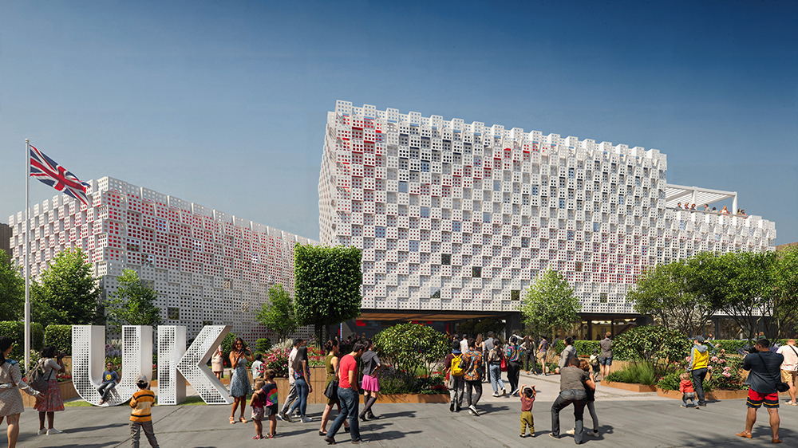
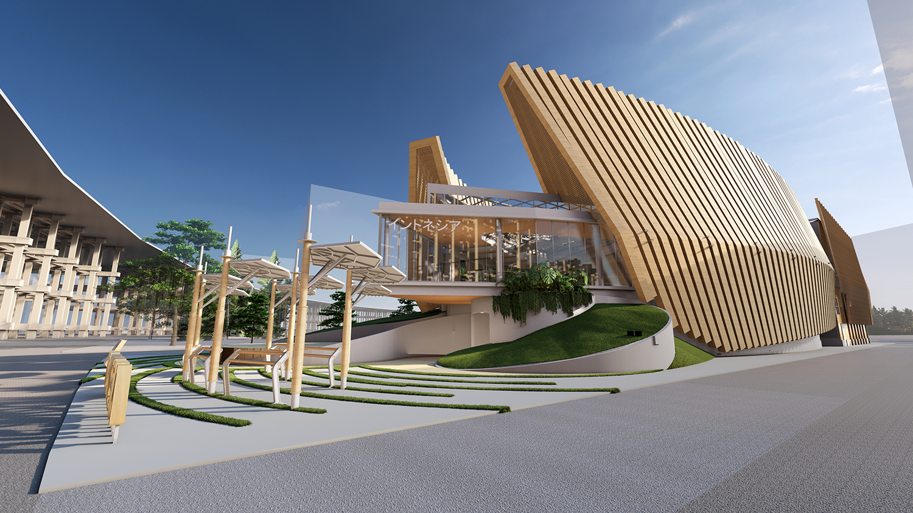
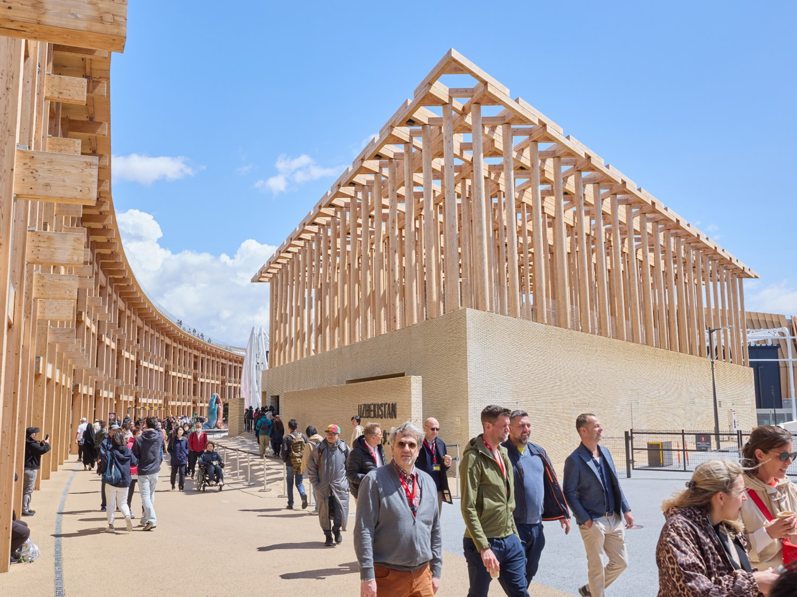
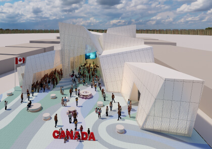
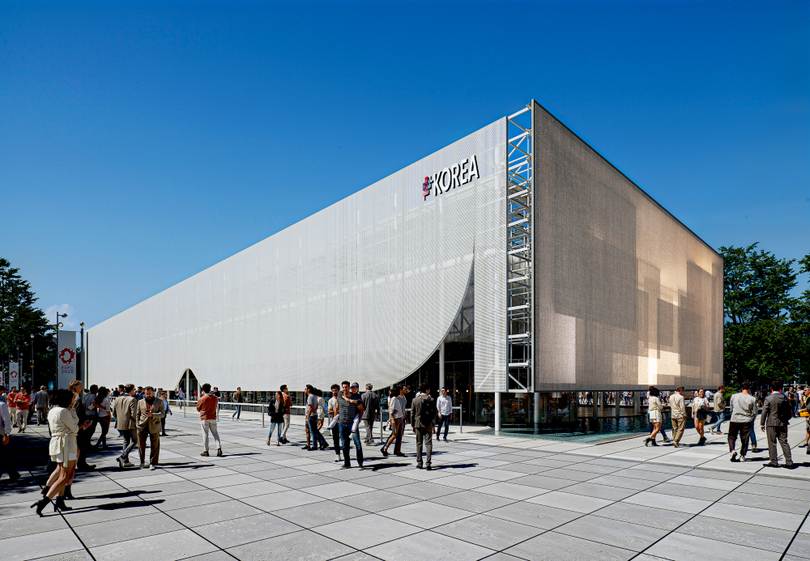
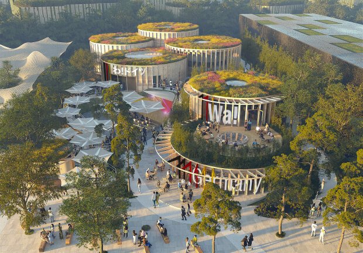
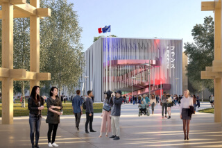

海外パビリオン紹介
大阪万博の海外パビリオンを紹介するページです。
アメリカ
共に創出できることを想像しよう

米国パビリオンは米国の革新性と独創性を視覚的に表現。木造の外観が特徴的な三角形の建物2棟と並行に、キューブが浮かぶように配置され、ステージも設けられています。パビリオンでは、テクノロジー、宇宙開発、教育、文化、起業家精神における米国のリーダーシップを紹介し、5つの没入型展示エリアが新たな視点から可能性について考えるよう来場者を迎えます。
美しきアメリカ
イギリス
ともに未来をつくろう
おもちゃの積み木からインスピレーションを得た英国パビリオンは、モダンで革新的、そして英国らしいユニークなデザインです。
世界を変えるイノベーションを生み出す力を持つ小さなアイデアに基づいて物語をご紹介します。
アイデアのひとつひとつは、積み木と同じように、何か素晴らしいものに成長する可能性を秘めています。
英国は、世界の問題解決者が集まり、地球規模の課題に取り組む国です。ぜひ、大阪で未来を築くために私たちと一緒に取り組みましょう。
来場者は、英国の偉大なイノベーションの過去、現在、そして未来を巡る没入型の旅に誘われます。
Come Build the Future
2025年大阪・関西万博でともに未来をつくりましょう！
イタリア
芸術は生命を再生する

イタリア館は、MCAマリオ・クチネッラ・アーキテクツがデザイン設計を手がけ、「アートは人生を再生する」というテーマを掲げています。
ルネサンス期の理想都市に着想を得た館内には、イタリアの都市文化を象徴する劇場、ポルティコ（列柱廊）、広場、庭園が配置されています。
ここでいう「アート」とは、イタリアが誇る美、創造性、そして卓越した職人技を指す「テクネ」を意味します。
毎日午後6時からは、円形劇場にて多彩なライブパフォーマンスが繰り広げられます。
また、グランド・リングから望むイタリア館は、ファルネーゼ・アトラスを中心に、ティントレットやカラヴァッジョの名作などが展示される、まさに驚異のギャラリーとなっています。
インドネシア
調和の中で繁栄する：自然、文化、未来
世界のダイナミズムと、持続可能な開発に挑戦するインドネシアの取り組みは、パビリオンの象徴である船と深く関係しています。様式美を極めたそびえ立つ船の形は、絶えず前進し、成長し、障害を乗り越えて持続的に航行していくという力強いビジョンに象徴される哲学を体現しています。
パビリオンのマスコット、TUMTUMにもぜひ会いに来てください。インドネシアの民族模様であるTRUNTUMから生まれた3人の小さな精霊です。自然の要素としての開花を描いたトゥマラ、インドネシアの文化「バティック」の一部であるトゥンバヤ、そして未来への希望という深い意味を持つトゥマサの3種類がいます。
ウズベキスタン
知識の庭 – 未来社会のための実験室
ウズベキスタン・パビリオンは、「知識の庭」をテーマにし、ウズベキスタンの豊かな文化遺産を巡る旅:ウズベキスタン芸術文化開発財団がATELIER BRÜCKNERの受賞歴のあるデザインで制作したこのパビリオンは、人と自然の調和を反映している。
ウズベキスタンの庭園は、昔から文化交流、内省、社交の拠点となってきた。レンガ、粘土、スギの木で造られたパビリオンは、この遺産を再構築している。トゥマールの形をした三角形の敷地に建つこのパビリオンは、伝統、革新、持続可能性、創造性を探求し、「知識の庭」の美と知恵に結実する。
カナダ
冬が春に変わるとき
カナダパビリオンのコンセプトは『再生（Regeneration）』。春の訪れと共に凍っていた川の水が溶ける風景をイメージしています。パビリオン外観は、カナダで見られる自然現象「水路氷結」を表現していて、川面の氷が溶けて流れることで生まれる儚（はかな）い氷の造形が魅力です。氷に覆われた外観とは対象的に、パビリオン内ではカナダの温かさ、開放性、前向きな姿勢が表現され、来館者はカナダの革新性、多様性、創造性、持続可能な社会に関する取り組みを体験できます。
韓国
こころに寄り添う : いのち花開く未来へ
With Hearts
全世界の人々の心を１つに寄せ合わせ
すべてのいのちが共存できる新しい未来を創っていきます。
私たちの先端未来技術は、いのちの尊さを重んじながら
人と人をつなぎ、持続可能な未来社会へと導いてくれるでしょう。
私とあなたの心が出会う場所、
韓国パビリオンですべてのいのちが共に未来を描いていきます。
ドイツ
循環経済「サーキュラーエコノミー」を体感
ドイツパビリオンのテーマは、「循環経済（サーキュラーエコノミー）」、タイトルは「わ！ ドイツ」です。
「わ！」には、循環の「環（わ）」、調和の「和（わ）」、 感嘆の「わ！」の３つの意味を込めています。
パビリオン自体が循環型・持続可能な建築の出展作品となっており、建築・景観・展示を一体化し、他ではできない体験を提供します。その体験を通し、循環型未来へと続く道を歩んでいただけます。
フランス
愛の讃歌、大胆さとコミットメントへの招待
フランスパビリオンのテーマは「愛の讃歌」。
互いの小指が見えない魔法の糸で結ばれているという「赤い糸の伝説」。この赤い糸を通じて、「自分への愛」、「他者への愛」、「自然への愛」といった様々な「愛」に導かれる新しい未来のビジョンを提案します。
パビリオンのエントランスは、神秘的な雰囲気かつ開放的な劇場がデザインされ、パビリオン建屋の外側は、劇場のカーテンのようなベールで覆われています。展示の最後に庭園が姿を現します。
北欧館
北欧と共に、より良い明日へ

共同で出展する 2025 年 大阪・関西万博の海外パビリオンです。共同出展を通じて、持続可能な未来と 北欧の価値観を紹介します。パビリオンは、1,200 平方メートル、17 メートルの高さを誇る木造建築 で、北欧のデザインとサステナビリティを体現しています。展示スペース、ショップ、カフェ、会議室、ミーティング施設を備え、日本および日本企業との交流と関係強化を目指しています。